DES SCIENTIFIQUES EN ÉTAT DE CHOC! Une étudiante en médecine de Sorbonne a créé une formule unique à base de plantes qui vous aide à perdre 10 à 15 kg par mois SANS régime ni exercice physique!
Mais les grandes sociétés pharmaceutiques ne veulent pas que vous le sachiez!

Adèle pesait plus de 100 kg lors de la remise de son diplôme de fin d'études secondaires.
Adèle Verdier est la meilleure étudiante en médecine de l'université Paris 1 Panthéon-Sorbonne. En deux mois, cette fille unique a réussi à perdre plus de 35 kg grâce à son invention! Et surtout, elle n'a pas fait de régime ni d'exercice! Découvrez comment elle a procédé dans cet article.
Adèle est en surpoids depuis l'enfance. Elle a toujours voulu perdre du poids, mais n'a jamais pu le faire lorsqu'elle vivait avec ses parents. Sa mère était également en surpoids et gâtait sa fille avec des pâtisseries maison, des aliments gras et du chocolat depuis qu'elle était enfant. C'est ainsi qu'elle nous a montré son amour", explique Adèle .
Après avoir terminé l'école, Adèle s'est inscrite à l'école de médecine et a choisi d'étudier la diététique. Elle s'est rendu compte qu'une nutritionniste en surpoids était ridicule et que personne ne la prendrait au sérieux. Elle a alors décidé de perdre du poids. Mais l'addiction à la nourriture était plus forte et rien ne fonctionnait pour la jeune fille.
En dernière année d'université, alors qu'elle rédigeait sa thèse, Adèle est tombée sur une méthode innovante de décomposition des graisses, basée sur l'action des acides de fruits, dont elle n'avait jamais entendu parler auparavant.
La jeune fille s'est mise à expérimenter et a mis au point une formule qui a donné des résultats étonnants lors du test! Adèle a d'abord testé sa formule sur elle-même.
En seulement 2 mois, Adèle a réussi à se débarrasser de 35 kg de poids supplémentaire!
Elle a ensuite testé sa formule sur sa mère - et là encore, le résultat a été stupéfiant:
Une femme de 47 ans a perdu 40 kg et s'est débarrassée du diabète de type II, de l'hypertension artérielle et des problèmes articulaires!
La mère d'Adèle a réussi à perdre plus de 40 kg grâce à l'invention de sa fille.
La jeune fille a voulu faire breveter son remède, mais sa demande a été rejetée en raison de l'absence d'essais cliniques. Adèle s'est ensuite adressée au service pour obtenir de l'aide dans l'organisation de sa recherche, mais elle a essuyé un nouveau refus. Son développement n'a pas été pris au sérieux.
"J'ai été très blessée! J'ai vu que ma formule fonctionnait, elle nous a vraiment aidés, ma mère et moi, à perdre du poids. Mon amie a également perdu 8 kg grâce à ma formule. Mais ils ne voulaient même pas m'écouter.
J'ai ensuite commencé à inviter les gens à participer à
l'expérience sur les médias sociaux. Dix personnes ont répondu à mon
appel. Sur ces 10 personnes, 8 ont perdu plus de 15 kg en un mois sans
faire de régime ni d'exercice!
J'ai alors été convaincue
que ma formule constituait une percée en matière de perte de poids!
Plus tard, 28 autres personnes ont réussi à perdre du poids en utilisant la formule d'Adèle . Ces personnes ont écrit à la jeune fille pour lui proposer de participer à l'expérience. La rumeur d'un remède miracle qui coupe l'appétit et brûle 400 à 500 grammes de graisse par jour s'est rapidement répandue .
Des structures scientifiques s'intéressent à la découverte de Adèle et elle est bientôt invitée à Bruxelles, où l'Institut de diététique et de nutrition de l'EAMS mène des études cliniques à grande échelle auprès de plus de 2000 personnes dont l'IMC est supérieur ou égal à 30.
Adèle est aujourd'hui invitée à prendre la parole lors de grandes conférences médicales dans tout le pays.
Adèle est souvent invitée à prendre la parole lors de conférences spécialisées
Sous la direction des scientifiques de l'Institut de diététique et de nutrition de l'EAMS, la formule de Adèle a été utilisée pour créer le traitement de perte de poids le plus efficace au monde.
Les essais cliniques ont été couronnés de succès et Matcha Slim (nom breveté du produit) est aujourd'hui utilisé dans les meilleures cliniques du monde pour lutter contre l'obésité.
Adèle a reçu un certificat d'appréciation du ministère de la santé pour sa contribution à la science.
Quel est le secret de la formule d'Adèle Verdier?
De nombreuses personnes, comme Adèle elle-même, prennent du poids en raison d'une mauvaise alimentation, d'un mode de vie passif et de situations stressantes.
Le surpoids entraîne de graves problèmes de santé, des complexes et des problèmes psychologiques.
Adèle a ressenti le poids de l'obésité sur elle-même: elle était gênée d'aller à des fêtes, n'avait presque pas d'amis et avait des problèmes dans sa vie personnelle. Les tentatives de perte de poids par le biais d'un régime et d'exercices physiques ont été infructueuses. Adèle a alors décidé de devenir nutritionniste pour s'aider elle-même et aider les autres.
Alors qu'elle rédigeait sa thèse, elle est tombée sur une étude intéressante: un groupe de scientifiques décrivait des brûleurs de graisse naturels, qui s'avéraient être des fruits exotiques. En outre, ces fruits contiennent des substances capables de réguler le métabolisme et de contrôler l'appétit.
Adèle a dressé une liste de ces fruits. Il s'agissait simplement de les sortir et de mélanger les extraits de fruits dans certaines proportions. Mais il s'est avéré difficile de trouver les fruits figurant sur la liste. Mais Adèle ne s'est pas découragée: elle a pu commander des extraits séchés des fruits et baies appropriés en Thaïlande et au Cambodge.
La "naissance" d'une formule qui a sauvé des milliers de personnes de l'obésité
Adèle a pu accéder au laboratoire et a passé des jours à travailler sur sa formule, à faire des expériences. Lorsque les premiers résultats sont arrivés, Adèle a décidé de tester la formule sur elle-même.
Adèle est restée debout toute la journée dans le laboratoire pour travailler sur sa formule
Après des mois d'essais, de larmes, de tâtonnements et d'erreurs, Adèle a réussi à créer la combinaison parfaite d'ingrédients.
Comment fonctionne le meilleur brûleur de graisse au monde?
La formule inventée par Adèle a un effet complexe sur l'organisme:
- Contrôle l'appétit
- Rétablit le métabolisme
- Favorise la combustion des dépôts de graisse
La leptine est une hormone du corps qui aide à réguler l'appétit. Cette hormone envoie des signaux au cerveau pour qu'il arrête de manger lorsque le corps est satisfait de la nourriture.
Cependant, en raison de la "résistance à la leptine", ce signal n'atteint pas le cerveau. Cela vous incite à manger davantage, même si vous avez suffisamment mangé.
La formule de Adèle combat la résistance à la leptine et déclenche les signaux de satiété à votre cerveau. Il déclenche également des signaux qui accélèrent le métabolisme.
"Dans les sources, j'ai trouvé des expériences menées par des scientifiques américains et britanniques dans les années 1980. Ils ont isolé les jus de fruits du mangoustan, du fruit de la passion, de la papaye et de l'açaí et les ont mélangés dans certaines proportions.
Ces médicaments étaient destinés aux personnes obèses. Les expériences ont été couronnées de succès: des personnes ont perdu jusqu'à 20 kg par mois, tout en nettoyant leur corps et en le saturant de vitamines", explique Adèle .
Que faire si vous avez un métabolisme lent ou si vous avez lutté toute votre vie contre le surpoids?
Ne vous inquiétez pas.
Même si vous avez un métabolisme lent. Même si vous avez essayé de perdre du poids toute votre vie. Ou même si vous souhaitez simplement perdre du poids avant un mariage ou un événement à venir.
Le brûleur de graisse Active Fruit, basé sur la formule de Adèle Verdier , fait facilement l'affaire!
Prenons l'exemple d'Elise Cutitar , 62 ans
Elle a lutté toute sa vie contre un métabolisme lent. Dès son plus jeune âge, elle prend facilement du poids.
Pourtant, lorsqu'elle a essayé cette nouvelle méthode de lutte contre l'obésité, son métabolisme a décuplé! Aujourd'hui, elle peut manger presque tout ce qu'elle veut. Et il reste en forme!
Regardez comment Elise a changé et commencé une nouvelle vie, en perdant plus de 50 kg en 3 mois
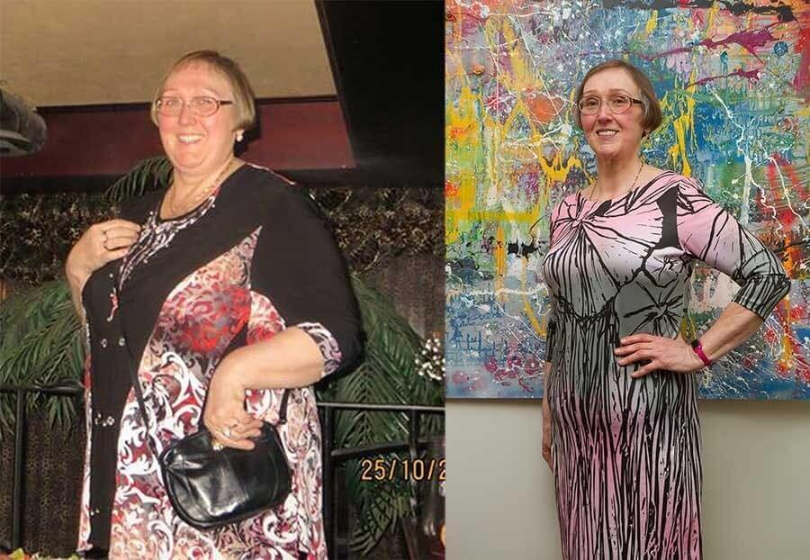Marie est un autre exemple - elle voulait vraiment perdre du poids pour son prochain mariage et cherchait une méthode express. Comme vous pouvez le constater, elle a réussi et a perdu plus de 20 kg en un mois!
Et Joviale, 45 ans, a été en surpoids pendant la majeure partie de sa vie. Elle aussi avait un métabolisme lent. Un remède créé par Adèle Verdier l'a aidée à relancer son métabolisme et Joviale peut désormais porter des vêtements de taille 46!
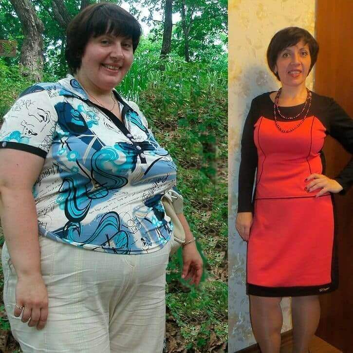Et vous aussi!
Imaginez que vous trouviez un costume ou une robe que vous n'avez pas porté depuis des années. Ou ce que cela donnerait d'avoir l'air mince et de figurer sur vos nouvelles photos sur les réseaux sociaux.
Ce produit innovant vous aidera à réaliser tous vos rêves de perte de poids!
Vos problèmes de poids ne sont PAS de votre faute!
Adèle Verdier, diététicienne diplômée, sait qu'elle n'est pas responsable de sa prise de poids. Et votre poids n'est pas de votre faute.
Lorsque Adèle a approfondi ses recherches, elle a appris des choses choquantes.
Il existe en Europe de grandes entreprises pharmaceutiques qui nous viennent de l'étranger. Ils financent également une grande partie de la recherche et de l'expérimentation menées par des professeurs et des équipes de scientifiques renommés dans les instituts de recherche de notre pays. Les salaires des professeurs dépendent du financement de ces grandes entreprises. Les concurrents n'en ont pas besoin, et c'est compréhensible.

Ce sont ces mêmes professeurs qui étaient sceptiques quant au développement de Adèle.
Adèle a été offensée et s'est toujours demandé pourquoi son supérieur, un professeur connu et respecté, faisait la promotion de médicaments potentiellement dangereux et coûteux pour la perte de poids.
En même temps, elle favorise le développement d'une solution naturelle sûre, moins chère et plus efficace au problème de l'excès de poids.
Grâce au travail et à l'activisme de Adèle, qui n'a pas été arrêtée par l'interdiction des chercheurs de l'Institut de diététique de Paris, vous pouvez expérimenter par vous-même les bienfaits du nouveau remède contre la perte de poids.
Adèle l'affirme même:
Matcha Slim est le dernier produit de perte de poids dont vous aurez besoin!
Vous n'aurez plus jamais besoin de suppléments de perte de poids, de régime ou de sport. Pourquoi? Sa formule brûle-graisse est aujourd'hui accessible à tous. Et peut vous aider à perdre jusqu'à 20 kg en 30 jours! Contrairement à la plupart des produits d'amaigrissement, cette méthode favorise une perte de poids durable. Vous pouvez conserver les résultats obtenus pour toujours!
Adèle veut que les personnes obèses puissent se débarrasser de leur excès de poids et devenir minces, en bonne santé et facilement!
Et Adèle ne le fait pas pour l'argent! Elle veut simplement aider les gens à perdre du poids comme elle. C'est le but de sa vie en tant que futur médecin spécialisé dans la nutrition.
Adèle a vécu et sait à quel point il est difficile de perdre du poids. Elle a suivi un régime, fait de l'exercice et est allée à la piscine. Elle a bu divers produits amaigrissants et laxatifs. Elle se rend compte aujourd'hui qu'elle n'a fait que se faire du mal.
Elle sait maintenant avec certitude que l'on peut perdre du poids RAPIDEMENT, EN TOUTE SÉCURITÉ ET FACILEMENT!
Vous pourrez bientôt voir les résultats de votre perte de poids. Quelque chose que vous n'avez jamais vu auparavant.
Vous n'avez pas besoin de limiter votre consommation de nourriture. Mangez-en autant que vous le souhaitez. Votre métabolisme accéléré vous empêchera d'accumuler des calories sous forme de graisse.
Il n'est pas nécessaire de faire de l'exercice, les graisses sont brûlées sans exercice!
Il vous suffit de suivre Matcha Slim et de vous voir dans le miroir avec la silhouette parfaite dont vous rêvez.
Donc...
Comment fonctionne le Matcha Slim
"Pour perdre du poids, les gens suivent des régimes épuisants ou épuisent leur corps en faisant de l'exercice physique. Tout cela est inefficace et malsain.
Le véritable antidote au surpoids est à notre portée depuis des siècles - il se trouve dans les plantes!
Ces plantes poussaient tranquillement sur Terre, attendant que quelqu'un remarque enfin leur présence. Il suffisait de les combiner et de les laisser agir sur le corps humain", déclare Adèle.
5 000 femmes et hommes âgés de 18 à 98 ans ont utilisé la méthode de perte de poids inventée par Adèle Verdier.
Tous ont réussi à perdre du poids et sont aujourd'hui encore à leur poids optimal. Aucune de ces personnes n'a eu d'effets secondaires.
"La combustion des graisses excédentaires est 100 % naturelle, sans risque d'allergies ou d'autres réactions négatives de l'organisme", explique Adèle.
Les résultats parlent d'eux-mêmes. Grâce à un design unique:
- Les acides et extraits de fruits peuvent réduire le poids jusqu'à 10 kg en 2 semaines, en fonction du poids initial. Une cure complète de perte de poids dure de 5 à 6 semaines. Cependant, vous pouvez continuer le cours jusqu'à ce que vous atteigniez votre IMC idéal.
- Il n'est pas nécessaire de suivre un régime ou de faire de l'exercice, car cette méthode de perte de poids n'exige pas que vous changiez vos habitudes alimentaires ou que vous fassiez de l'exercice.
- Un indice de masse corporelle normal minimise le risque de maladies graves: athérosclérose, diabète, arthrose, crise cardiaque, accident vasculaire cérébral ou infarctus du myocarde.
- Vous ne prenez pas de poids après le cours car votre métabolisme s'équilibre. Vous consommez autant de calories que vous en dépensez et vous ne mangez pas trop.
- Les niveaux d'énergie et de force musculaire sont multipliés par 5. Augmente la production de sérotonine, améliore l'humeur et la vitalité.
Pourquoi est-ce le moyen le plus facile de perdre du poids?
Il suffit de prendre 2 cuillères Matcha Slim le matin avec un verre d'eau pour perdre du poids! Pas besoin de suivre un régime ou de faire de l'exercice!
- Pas de comptage de calories ni de restrictions alimentaires.
- Pas de formation épuisante.
Pouvez-vous le croire?
Découvrez comment Marina a perdu 18 kg en un mois:
"J'ai été choqué. Lorsque j'ai participé aux recherches de Adèle , son équipe m'a conseillé de ne pas suivre de régime et de ne pas faire d'exercice. Il suffit de prendre deux cuillères avant les repas, une fois par jour. Je perdais du poids tous les jours. J'ai perdu 15 kg en un mois!
Et voici les résultats de Vincent en 29 jours:
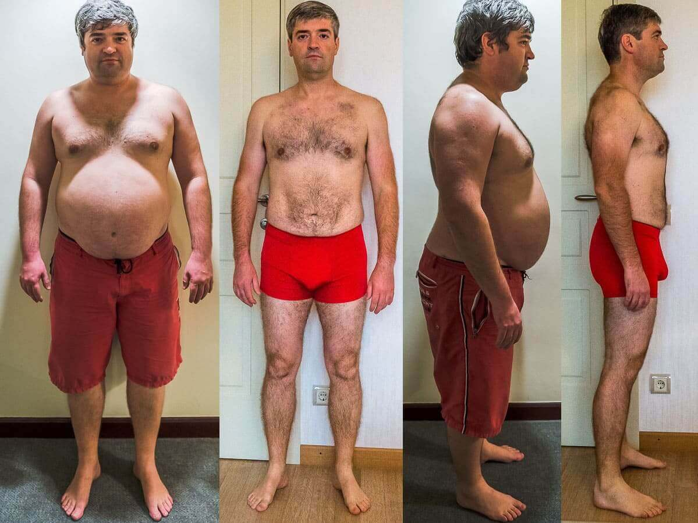"Je déteste faire du cardio ou tout autre type d'exercice. Et on ne peut pas me mettre au régime... Mais Adèle m'a dit de prendre deux cuillères une fois avant le repas avec un verre d'eau. Environ 1,5 à 2 mois plus tard, j'avais perdu 25 kg. J'ai même bu de la bière et mangé de la pizza tous les week-ends. Merci, Adèle!"
Voici une comparaison entre les personnes qui suivent un régime traditionnel et font de l'exercice et celles qui ont testé le Matcha Slim:
Perte de poids moyenne - dans le cadre d'un régime strict contre le Matcha Slim
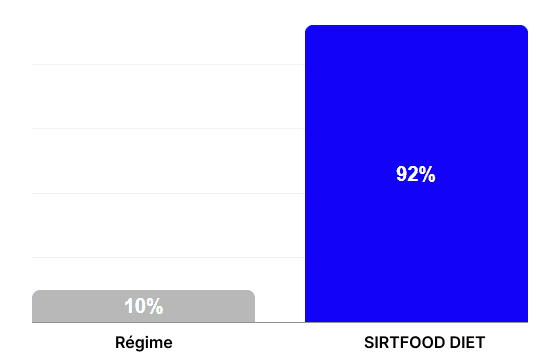92 % des participants à l'étude qui ont suivi le Matcha Slim ont perdu plus de 17 kg en deux mois, alors que seulement 10 % des personnes ont atteint ce résultat avec les méthodes traditionnelles de perte de poids.
NOTE. Les participants au test Matcha Slim ont été autorisés à manger n'importe quel aliment. Aucune restriction sur la quantité ou le type de nourriture. Ils étaient également autorisés à boire de l'alcool.
Imaginez: vous pouvez déguster tous les aliments que vous aimez. Et vous n'avez pas besoin de faire de la musculation pour obtenir le corps de vos rêves!
Y a-t-il un risque de reprise de poids?
Adèle déclare: "Il n'y a AUCUN risque de reprise de poids!
Julie a suivi un régime toute sa vie, mais les kilos qu'elle a perdus reviennent toujours.
Elle pensait qu'elle ne parviendrait jamais à perdre du poids.
Mais lorsqu'elle a participé aux recherches d'Adèle , elle a perdu 17 kg en un mois!
Elle avait très peur de reprendre du poids. Mais cela fait deux ans maintenant, et Julie conserve son corps mince et svelte. Le poids n'est PAS revenu.
Serge n'a rien changé après avoir perdu du poids avec le Matcha Slim, et a même perdu 5 kg supplémentaires après 6 mois de tests avec Adèle. Il a perdu 45 kg au total:
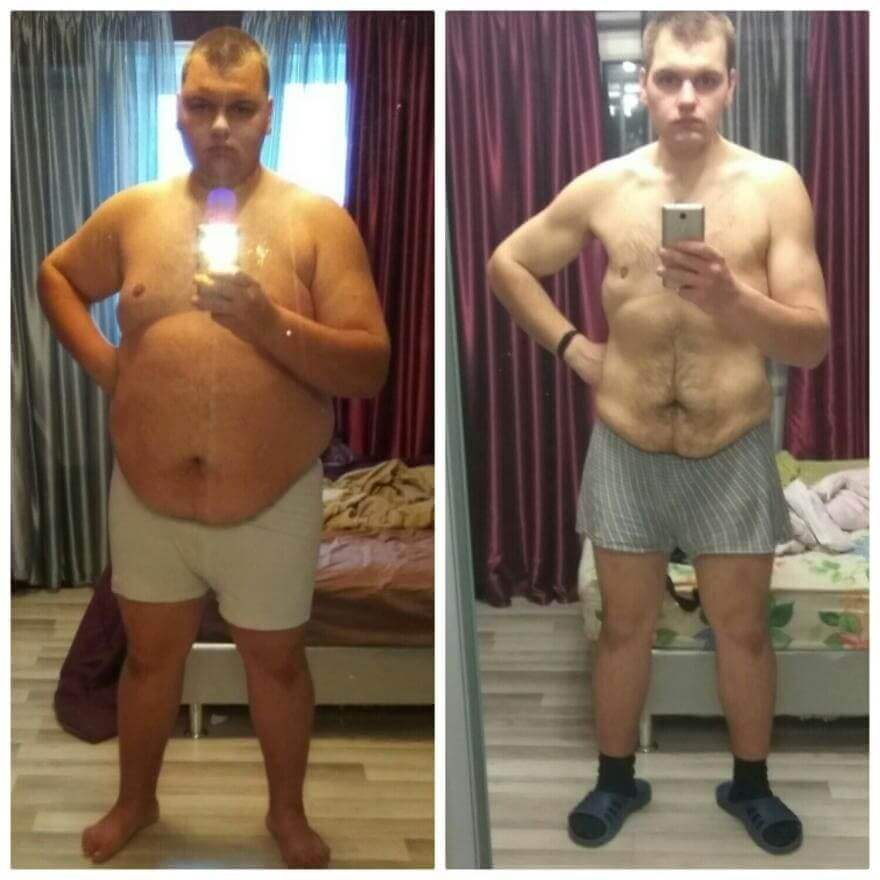Michele, une autre participante à l'étude de Adèle, lui a écrit une lettre pour lui dire que son poids n'avait pas changé après 6 mois de perte de poids:
"Après avoir perdu 16 kg en 30 jours, je n'ai rien changé pendant six mois. Et devinez quoi? J'ai toujours l'air, le poids et la sensation d'être aussi cool!
Si vous êtes un représentant typique des personnes qui perdent et prennent du poids, vous pouvez voir ce que c'est que de garder le poids... pour toujours.
Vous vous demandez sans doute...
Matcha Slim est-il sûr?
Le Matcha Slim étant entièrement naturel, il est totalement SÛR pour votre santé. De plus, il est très bon pour l'organisme!
Pas d'effets secondaires!
Matcha Slim est un concentré de fruits exotiques 100% naturel contenant un COMPLEXE COMPLET de brûleurs de graisse à base de plantes, dont l'extrait de mangoustan (qui active la combustion des graisses dans les zones à problèmes - ndlr), ainsi que des extraits d'açai, de fruit de la passion et de baie de papaye, qui détoxifient l'organisme, stimulent le métabolisme et bloquent la sensation de faim.
Le produit est désormais disponible sous forme de poudre, à prendre deux fois par jour avec un verre d'eau. Sous cette forme, les principes actifs sont mieux absorbés par la paroi intestinale et sont entièrement assimilés.
Une fois dans l'organisme, les principes actifs de Matcha Slim décomposent littéralement les graisses des aliments, les empêchant ainsi d'être stockées sous forme de bourrelets disgracieux sur le ventre, les cuisses et les fesses.
Mais ce n'est pas tout.
Non seulement il brûle rapidement les graisses, mais il apporte également à votre corps des vitamines et des nutriments!
"Le Matcha Slim m'a permis de perdre 29 kg et je n'ai ressenti aucun effet secondaire", déclare Inna.
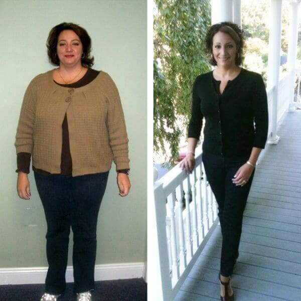"Au départ, j'étais sceptique quant au Matcha Slim, ne croyant pas qu'il était possible de perdre du poids en prenant simplement quelques cuillerées. Je craignais également l'effet laxatif et les nausées. Mais mon corps a parfaitement toléré le médicament et j'ai pu perdre plus de 30 kg en deux mois."
N'hésitez pas - ce produit est efficace et totalement SÛR!
Imaginez le poids que vous perdrez sans effort.
Les principales propriétés du Matcha Slim:
- Brûler les graisses
- Suppression de l'appétit
- Normalisation du contexte hormonal
- Rajeunir et nettoyer le corps
- Effet tonique en brûlant la masse graisseuse
Le produit contient tout un complexe d'extraits de plantes qui assurent une perte de poids régulière et normalisent les processus métaboliques, garantissent une perte de poids confortable, bloquent la faim et augmentent le potentiel énergétique. Le produit agit dès la première utilisation, sans régime ni exercice physique.
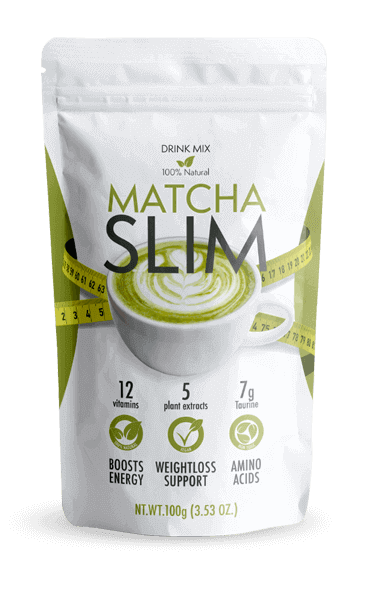Le produit se présente sous forme de poudre et est rapidement absorbé dans l'estomac et les intestins, bloquant la faim et éliminant les dépôts de graisse.
Perdez jusqu'à 5 kg par semaine en accélérant les processus naturels de l'organisme. Cela signifie que vous ne devez pas vous astreindre à un entraînement intensif ou à un régime strict.
Comment fonctionne le Matcha Slim:
- Les 3 à 5 premiers jours sont consacrés à l'élimination de l'excès de liquide dans le corps. Le gonflement disparaît et la cétose se met en place. Le poids est réduit de 1,5 à 2 kg.
- Jour 5-10 - accélération du métabolisme. Le corps digère complètement les aliments et commence à utiliser les réserves de graisse de manière encore plus intensive.
- Le jour 10-15 est la phase active de la lipolyse. Le processus de combustion des tissus adipeux et de leur transformation en énergie est stimulé. Vous vous sentirez revigoré et plein d'énergie.
- Jour 15-20 - désintoxication des intestins. Normalisation du tractus gastro-intestinal. À ce stade, les personnes ont perdu en moyenne 10 à 12 kg.
- À partir du 21e jour - brûler les graisses viscérales. La graisse des organes internes disparaît. Votre estomac se resserre et vous vous sentez beaucoup mieux.
Que disent les clients du brûleur de graisse Matcha Slim?
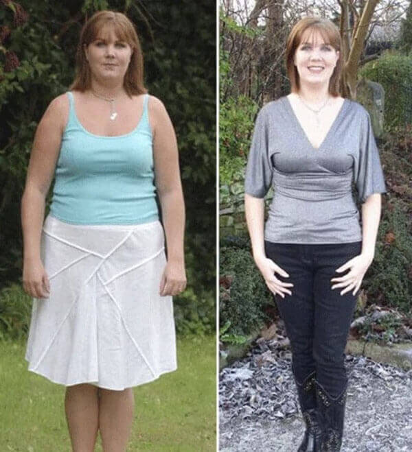"J'avais entendu parler des expériences réussies de Adèle et je l'avais vue sur les médias sociaux, mais je pensais que c'était trop beau pour être vrai. Mais j'ai perdu au total 15 kg en 23 jours. Je suis vraiment contente d'avoir pris le risque de l'essayer!"
Martine Lourdin , Lyon
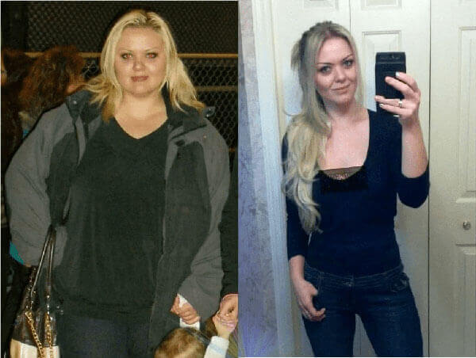"Essayez-le! J'ai perdu 25 kg en un mois et demi".
Silvie Montagnier, Metz
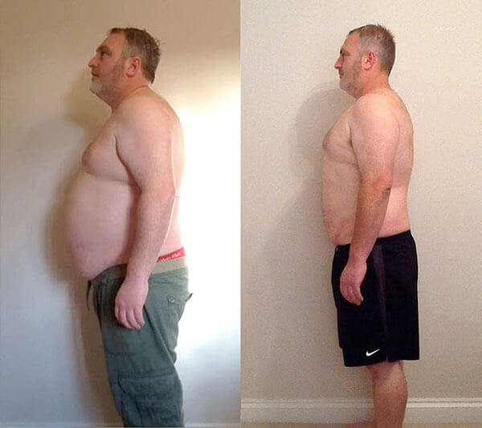"Toute ma vie, j'ai été en surpoids. Ni les régimes ni l'entraînement n'ont jamais aidé. En 25 jours, j'ai perdu plus de 16 kg pour la première fois de ma vie. Je viens de suivre le Matcha Slim. C'est très simple. Merci, Adèle!"
Paul Gulden, Nancy
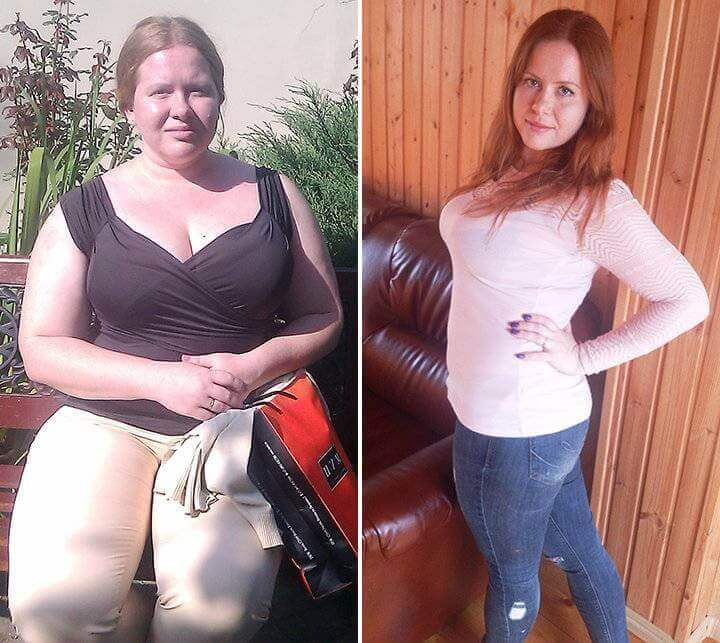"J'ai été surprise lorsque mon amie m'a suggéré le Matcha Slim et m'a même conseillé de ne pas faire d'exercice et de ne pas renoncer à mes aliments préférés. J'ai pu perdre environ 14 kg en 30 jours. C'était si facile et je n'arrive toujours pas à y croire, c'est incroyable!".
Christina Leclerc, Brest
Adèle a fait tout ce travail parce qu'elle se sent concernée.
Elle comprend ce que signifie un problème de poids.
Que ressent-on lorsque son poids fluctue tout au long de sa vie?
Maintenant qu'elle a trouvé la formule parfaite pour perdre du poids, elle souhaite que le plus grand nombre possible de personnes connaissent le "Matcha Slim".
Qu'avez-vous à perdre?
Deux possibilités s'offrent à vous.
Choix n° 1... vous décidez que le Matcha Slim n'est pas fait pour vous.
C'est normal.
Vous pouvez quitter cette page et poursuivre votre vie. Et restez dans la forme que vous avez aujourd'hui. Restez au même poids.
Il n'y a rien de mal à cela.
Ou... option #2... vous pouvez prendre votre vie en main, suivre le Matcha Slim... et perdre jusqu'à 20 kg en 30 jours.
À vous de choisir!
Maintenant, la grande question...
comment obtenir le Matcha Slim maintenant?
Vous avez beaucoup de chance! Le Matcha Slim est désormais accessible à tous avec une remise de 50 % sur une offre spéciale!
Pour ce faire, passez un petit test de 3 questions. Vos réponses aideront le fabricant à rendre le produit encore plus efficace et vous recevrez une réduction de 50% sur le Matcha Slim. La demande pour ce remède est aujourd'hui d'une ampleur sans précédent. Pour cette raison, le fabricant a été contraint de limiter la durée de la campagne. Vous pouvez participer à la campagne jusqu'à l'inclusion.
Important! Des études ont montré que sont les meilleurs moments pour prendre le Matcha Slim. En stabilisant la température moyenne, les processus métaboliques de l'organisme sont accélérés et l'effet du produit est multiplié. Vous perdez du poids 37 % plus rapidement qu'à d'autres périodes de l'année.
Conditions pour bénéficier d'une réduction de 50 % sur le Matcha Slim:
- Être un citoyen européen
âgé de plus de 18 ans.
Le remède à prix réduit n'est distribué qu'aux citoyens européens adultes. - Achat pour usage personnel
uniquement.
Celui-ci est nécessaire pour traiter avec les revendeurs. -
Seulement après avoir répondu à une courte enquête (seulement 3 questions). L'enquête est affichée ci-dessous. Ensemble, aidons le fabricant à rendre le Matcha Slim encore plus efficace!
Répondez aux 3 questions et obtenez le Matcha Slim à 50% de réduction!
Remplissez les champs ci-dessous et cliquez sur "Obtenir le Matcha Slim"
Obtenez le Matcha Slim en promotion
181
Commentaire
Isabelle Marchand
A l'instant
J'ai commandé le Matcha Slim. J'ai pris beaucoup de poids ces derniers temps, il faut que je fasse quelque chose. Les régimes et le sport n'y font rien, je pèse déjà 95 kg. Terrible bien sûr, j'espère que ce Matcha Slim m'aidera!
Mireille Laruche
Mon colis est enfin arrivé! Tout s'est déroulé très rapidement et simplement, avec un retrait au bureau de poste et un paiement à la livraison. J'attends avec impatience les résultats! J'ai hâte d'y être))
Chloé Mendes
Article et outil intéressants. Mais son fonctionnement n'est pas encore clair.
Nicole Pascal
Chloé, l'objectif est d'accélérer le métabolisme. C'est-à-dire que vous assimilez complètement les glucides sans les accumuler, puis vous en consommez beaucoup moins (vous n'en avez tout simplement pas envie, vous voulez de la viande et de l'eau!) et le corps commence alors à puiser de l'énergie dans les anciennes réserves de graisse et laisse de côté le ventre, les flancs et la graisse des organes internes. Le Matcha Slim est un excellent moyen de lutter contre la graisse viscérale. Cela m'a beaucoup aidé!
Monique Jousset
Tout va bien, mais je ne comprends pas pourquoi il n'y en a pas dans les pharmacies?
Evelyne Montier
Vous n'avez pas dû lire l'article attentivement! Les pharmacies en général ont des antécédents criminels. Il n'est pas rentable pour eux de vendre le Matcha Slim. Vous feriez mieux de vous contenter d'un millier d'euros pour des médicaments contre la tension artérielle, des médicaments pour l'estomac et d'autres choses encore. Toutes les conséquences de l'obésité... Je pense qu'après une telle histoire, le Matcha Slim sera dans les pharmacies, mais à un prix élevé.
Aurelie Berger
Oooh!!! Le Matcha Slim est à moi! Je l'aime beaucoup. Je n'ai pu le trouver nulle part pendant longtemps, à un moment donné un médecin m'a donné un lien pour le commander et je l'ai perdu(( Donc merci beaucoup pour cet article si intéressant. Réussir le test, obtenir la réduction!
Louise Dupas
C'est très pratique d'en prendre un avant les repas, je viens juste de commencer mais j'ai déjà des résultats) J'ai répondu à quelques questions et j'ai obtenu une réduction! Tout est juste. Et l'on voit tout de suite que l'approche est bonne, minutieuse. S'ils mènent également une enquête, cela signifie qu'ils sont vraiment intéressés par les résultats. Bravo!
Mathilde Pasquier
Bonjour, j'ai commencé à suivre le Matcha Slim et je n'ai perdu que 8 kg en un mois((((
Suzy Meyer
J'ai répondu aux questions honnêtement et j'ai obtenu une bonne remise, merci!
Josette Bourreau
Et j'ai obtenu 50% de réduction, hourra!!!
Leila Monnier
J'ai commencé à l'accepter, j'ai mangé ce que je voulais et j'ai perdu 9 kg. Je pense que le Matcha Slim est le meilleur que j'ai vu pour perdre du poids, et le meilleur, c'est que vous n'avez pas besoin d'aller à la salle de sport, vous n'avez pas le temps ou l'envie de le faire. Cette solution est parfaite pour les personnes comme moi! Je recommande!
Alexandre Balthazar
Avant de commencer à suivre le Matcha Slim, je pesais jusqu'à 106 kg. J'ai toujours été mince, mais en vieillissant, j'ai progressivement pris du ventre et des flancs. À l'âge de 25 ans, j'ai réalisé qu'il était urgent que je me remette en forme. Pendant près d'un an, je me suis consacré à l'entraînement, mais je n'ai jamais pu atteindre ma forme normale. J'ai alors découvert par hasard le Matcha Slim et, en quelques semaines, je suis devenue la personne que j'ai toujours voulu voir dans le miroir. Aujourd'hui, je préserve ma ligne et le Matcha Slim est toujours sur mon étagère.
Suzanne Boucherot
Le Matcha Slim a bien fonctionné pour moi aussi. Maintenant, je mange ce que je veux et je m'en vante ;) 13 kg en un mois et demi. Continuez à faire du bon travail ;)
Caroline Dubuc
Avez-vous essayé d'arrêter de manger? Quand on est enfant, c'est compréhensible, on vous le donne et vous le mangez. Mais maintenant que tu es adulte, tu ne peux pas te contrôler et ne pas manger?
Nathalie Beynier
Caroline , oui je ne mange pratiquement rien, mais cela n'aide pas. Le poids s'est installé et ne diminue pas.
Claudine Bourt
J'ai été surprise que vous écriviez que seuls les nutritionnistes et les endocrinologues connaissent le Matcha Slim. Je le prends régulièrement depuis deux ans. J'ai perdu 14 kg dès que j'ai commencé à en prendre, et maintenant, c'est juste pour la prévention et les vitamines, c'est un concentré naturel de plantes. Mes amies le savent aussi depuis un moment, ce n'est donc pas seulement votre secret)) PHOTOS AVANT ET APRÈS
Marie-Laurence Delalleau
Pourquoi tout le monde devrait-il être soumis à la même norme? Pourquoi tout le monde doit-il être maigre? Par exemple, je pèse 79 kg à 167 ans et je n'en ai pas honte. J'adore mon apparence et je me sens bien!
Anne Muller
Ils ont mis au point une promotion très intéressante. Répondez aux questions et bénéficiez d'une réduction. Nous avons fait une enquête et ils nous ont accordé une réduction pour cela, c'est super))
Geneviève Perraudin
Les filles! J'ai besoin de perdre 9 kg de toute urgence! Je suis restée assise à la maison pendant six mois et, avant même de m'en rendre compte, j'ai pris du poids. Que faire!!!? sos!!! Je ne peux pas faire de régime, je n'ai pas de volonté, puis je retombe et je mange encore plus. La salle de sport n'est pas pour moi non plus, c'est trop paresseux et ennuyeux...
Brigitte Dupelin
Merci à tous ceux qui écrivent des commentaires et montrent des photos! Vos résultats me donnent aussi de l'espoir! Je veux vraiment changer et cela fait des années que cela ne marche pas. Autant vous perdez, autant vous récupérez.
Valerie Metivet
J'ai également regardé les photos avant et après. C'est très cool! J'ai hâte de laisser le même commentaire. En attendant, je déballe mon colis.
Therese Delforge
La remise sur le Matcha Slim est-elle uniquement disponible dans le cadre de ce test? Est-il encore vendu dans les boutiques en ligne?
Sebastien Martenot
Ma femme n'arrive pas non plus à perdre du poids. Mariée - elle pesait 53 kg, elle en pèse aujourd'hui 68. Le pire, c'est qu'elle n'y voit pas d'inconvénient. Vous avez raison, on s'habitue au poids et c'est comme s'il avait toujours été ainsi.
Valerie Metivet
Mon mari et moi buvons ensemble le Matcha Slim depuis longtemps. Nous avons également eu des problèmes de poids, mais maintenant nous n'y pensons même plus, nous mangeons tout ce que nous voulons, et si nous grossissons, nous suivons une cure de Matcha Slim et nous revenons à la normale.
Jeannine Bernet
Cool, si ça marche vraiment. Mais je suis sceptique. Et je peux croire davantage au pouvoir d'une pilule chimique qu'à celui de certains extraits naturels. Mais qu'est-ce qu'on peut faire pour un chiffre, je vais tenter ma chance pour obtenir une réduction tant que je le peux!
Lucienne Rodriguez
Je pèse 97 kg. Je ne sais plus comment les supprimer. Je ne veux pas dépasser 100. Que dois-je faire? A l'aide!!! Peut-on trouver ce Matcha Slim en pharmacie?
Annette Lombard
Lucienne , vous pouvez certainement regarder autour de vous, mais vous êtes mieux ici. Il y a littéralement 3 questions et vous bénéficiez d'une réduction de 50% sur cette promotion.
Louise Grant
Bonjour à tous, j'ai moi aussi perdu du poids avec le Matcha Slim. Honnêtement, c'est le résultat dont je n'avais jamais rêvé! Je trouvais cela idiot et je ne voulais pas commencer, mais ma sœur m'a persuadée d'essayer. Commander et perdre du poids ensemble. J'ai pu perdre 14 kg en un mois et demi, ma sœur 10 kg, mais son poids était initialement inférieur. Le poids s'est maintenant stabilisé et ne change plus!!! Dire que je suis heureuse est un euphémisme!!!:))) Je recommande à tout le monde de l'essayer! Au moins pendant 2 semaines, vous verrez les résultats par vous-même!
Agathe Liberioux
La graisse est dans votre tête. Même si vous perdez du poids, vous aurez encore plus de graisse plus tard ))))))
Françoise Litzler
Les filles, n'écoutez pas ceux qui vous disent que vous ne pouvez pas le faire ou que vous n'y arriverez pas. J'ai réussi! Et vous pouvez le faire! Je recommande le Matcha Slim à tout le monde, c'est la seule chose qui m'ait aidée.
Viviane Simon
J'AI ÉGALEMENT COMMANDÉ CE PRODUIT GRÂCE À UNE PROMOTION ET J'AI PERDU 11 KG. J'AI ENCORE BESOIN DE PERDRE AU MOINS 25 KG, J'AI L'AIR D'UNE VACHE, MON MARI REGARDE LES AUTRES!
Vanessa Raymond
Il a également répondu à des questions et a obtenu une réduction. Cela s'est avéré très rentable. Satisfaite, j'ai perdu 4 kg la première semaine sans régime ni sport.
Béatrice Schneider
J'ai lutté toute ma vie contre le surpoids. Il y a eu des moments où je me suis littéralement affamée. La santé et l'humeur en ont souffert. Je n'y croyais pas vraiment, mais le résultat a été incroyable: 20 jours et moins 14 kg! En même temps, je suis plein de force et d'énergie. Je veux reprendre le cours et j'ai très peur qu'il augmente de prix ou qu'il disparaisse de la vente.
Eliane Moret
Le Matcha Slim fonctionne! J'ai arrêté de manger de façon incontrôlée à cause du stress et j'ai perdu 12 kg. Je continuerai à le faire.
Joëlle Prouet
J'ai commandé en faisant une bonne affaire, j'ai hâte de recevoir le colis. Je travaille en horaires décalés depuis deux ans et mon métabolisme s'est déréglé. J'ai pris 17 kg et je n'arrive pas à m'en débarrasser. J'espère que cette poudre m'aidera.
Slyvia Baysselier
Et j'ai reçu mon cours aujourd'hui! J'ai hâte d'être à demain, dès le matin. J'ai déjà pris une photo pour pouvoir montrer le résultat plus tard.
Corinne Biraud
Les filles, n'hésitez pas à le prendre. J'ai moi-même perdu du poids avec le Matcha Slim et je le commande pour une amie dans le cadre d'une promotion. Je déteste les régimes et je tombe toujours en panne, mais ici vous vivez votre vie comme d'habitude et votre corps change pour le mieux!
Gisèle Joubert
Merci pour cet article! C'est ce dont j'ai besoin. J'ai laissé une demande, j'ai hâte de recevoir un appel. Je me demande combien de temps il faudra pour aller à Lint?
Rose-Marie Weber
J'ai découvert ce médicament il y a un mois et j'ai déjà terminé le cours. Je suis satisfaite du résultat et je suis heureuse que les experts le recommandent car je l'ai découvert moi-même par le bouche à oreille. Mais j'aime beaucoup les résultats!
Aline Philippe
Excellent! Je le prends depuis le deuxième jour et jusqu'à présent, j'ai remarqué que je suis plus calme, que mon appétit a diminué et que je n'ai pas d'envies de sucreries. L'ambiance est excellente. Je pense que cela va dans le bon sens!
Sandrine Dupuy
Bravo Adèle! Vous vous êtes embellie et vous avez aidé les autres!
Danielle Tavernier
Quelle chance d'avoir un aperçu de l'action! J'ai passé le test, j'ai obtenu la réduction. Bonne journée)))
Judie Le Bouyonnec
Ma fille m'a donné ce médicament à essayer, il est également plein de vitamines. Elle perd du poids depuis qu'elle est enceinte, elle a déjà perdu sept kilos sur eux.
Patricia Brousse
Merci, c'est intéressant, je vais me commander aussi pendant la durée de l'offre.